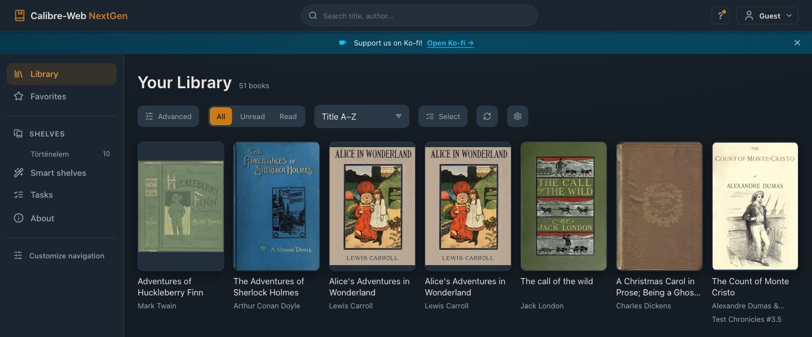
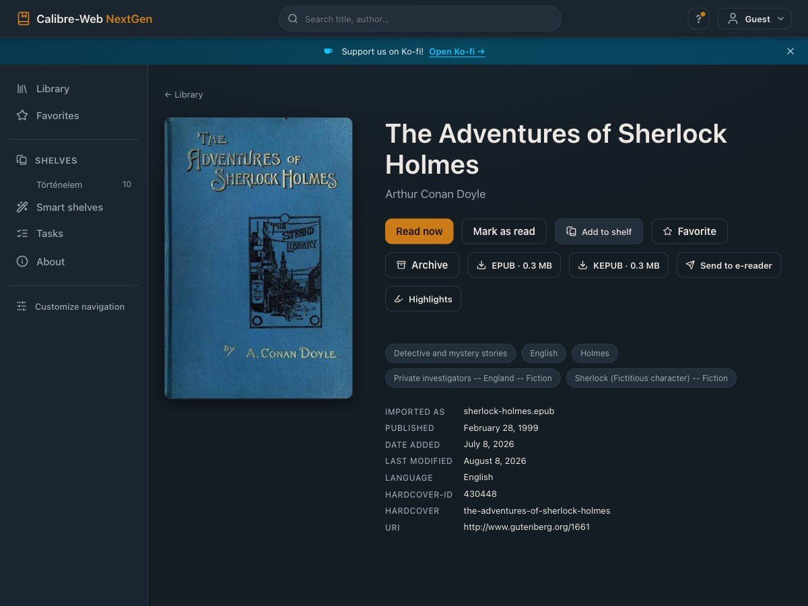
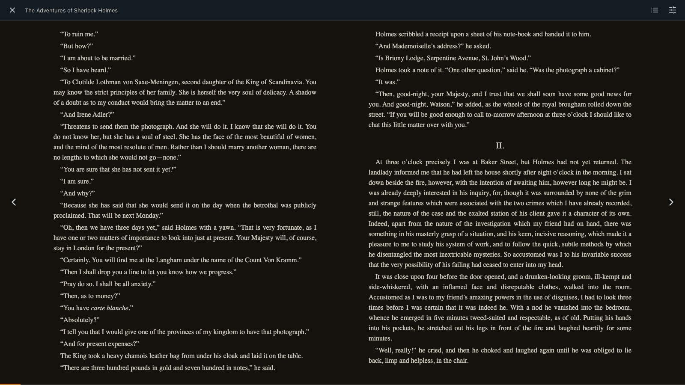
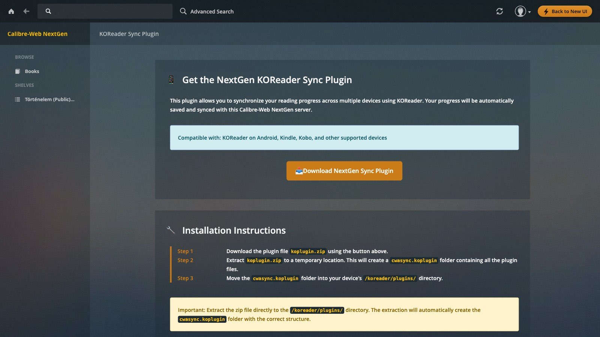
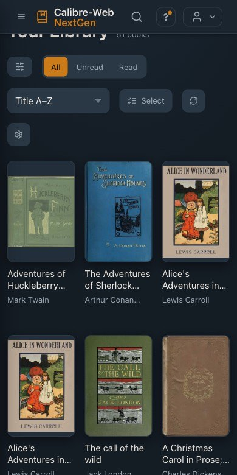

Calibre-Web NextGen
Your self-hosted eBook library server, with the bug fixes you’ve been waiting for — a drop-in replacement for Calibre-Web-Automated that keeps your library, users and settings, and is running in about two minutes.
services:
calibre-web:
image: ghcr.io/new-usemame/calibre-web-nextgen:latest
container_name: calibre-web
environment:
- PUID=1000
- PGID=1000
- TZ=America/New_York # change to your timezone
volumes:
- ./config:/config # settings, user db, logs
- ./library:/calibre-library # books live here
- ./ingest:/cwa-book-ingest # drop new books here to import
ports:
- 8083:8083
restart: unless-stopped- 1Save the block above as
docker-compose.yml. - 2Run
docker compose up -d. - 3Open
http://localhost:8083— log in withadmin/admin123and change the password.
Just the image: docker pull ghcr.io/new-usemame/calibre-web-nextgen:latest

Install where you already run Docker
Every guide covers a fresh install, switching from stock CWA, and updating later — with the exact buttons for your platform.
What you get
Everything Calibre-Web-Automated does, plus the fixes that were waiting in its pull-request queue — and a steady release cadence.
Drop-folder ingest
Drop an .epub into the ingest folder and it appears in your library seconds later, metadata and cover fetched.
Progress sync
Two-way reading-progress sync with KOReader and Kobo e-readers, against your own server.
Metadata & covers
Fetch metadata and high-res covers from Hardcover, Google Books, Amazon, iTunes and Open Library.
A modern UI
A redesigned, responsive interface that works on your phone — with the classic view one tap away.
Reads everywhere
OPDS feeds for reader apps, an in-browser reader, and send-to-e-reader — everything CWA already does.
Fixed & shipped
The upstream fixes that were stuck in the PR queue, plus fresh ones — in regular releases, byte-compatible and reversible.



Made for the phone, too
The new interface is responsive end to end — browse, search and read your library from the sofa. Sync carries your progress back to your e-reader.
First-run setup
Switch from upstream CWA
- image: crocodilestick/calibre-web-automated:latest
+ image: ghcr.io/new-usemame/calibre-web-nextgen:latest
docker compose pull && docker compose up -d
Library, settings, users, OAuth tokens, and KOReader sync state are preserved. Switching back is the reverse one-line change.
Not using a terminal? If you run Docker through a NAS or a GUI, follow a step-by-step guide instead — they cover both a fresh install and switching from CWA, with the exact buttons for your platform: Synology · Unraid · Portainer · TrueNAS SCALE · all guides. Configuration not matching? Open an issue or ask on Discord and we'll walk you through it.
- Bug? File it here.
- Feature idea? Open a request. Anything goes, no checklist required — even half-formed ideas are welcome and help prioritize what to look at next.
- New here? See Quick start below.
- Want to back the work? Sponsor on GitHub — no rewards, no paywalled features, one-time or monthly. Here's what it actually pays for.
- Setting up with an AI assistant (Claude, ChatGPT, etc.)? Point it at
AI_README.md— a setup guide written for the assistant to follow, verify, and hand back to you working.
Why this fork exists
CWA has an open PR queue with community-submitted bug fixes that aren't in the latest published image. This build picks the safe ones, ships them in regular releases, and adds fresh fixes for high-impact bugs that don't have an upstream PR yet. Feature work happens here too, driven by what users ask for in the issue tracker.
The data format and configuration are byte-compatible with upstream, so swapping images is reversible and migrations aren't needed in either direction.
What's included
Everything CWA has, plus the patches in CHANGES-vs-upstream.md. A representative slice of fixes that are in this build but not in crocodilestick/calibre-web-automated:latest:
- Cover saves from Hardcover, Google Books, iTunes, and Open Library (was returning "not a valid image" since 4.0.6).
- Metadata search and the book-delete button on Safari.
- Generate Kobo Auth Token (was returning a blank page).
- Kobo bookmark sync no longer crashes when the client omits
Location. - Auth check added to 14 admin routes (
cwa_logs,convert,epub_fixer, and others) that previously didn't require admin. - Cover-enforcer shell-injection on filenames containing quotes.
- Reverse proxy: user-profile saves honor the path prefix.
- Docker healthcheck follows the
/ → /login302 instead of failing on it. .cbrand.cbzuse IANA-registered mimetypes in OPDS feeds.- Higher-resolution covers from Google Books, Amazon, and an iTunes-backed fallback for high-DPI e-readers (Libra Color, etc.).
- Translation PRs merged: ja, fr, cs, hu, zh_Hans, zh_Hant, and others.
See Differences from Upstream for the full behavior table.
Where to go next
| I want to… | Page |
|---|---|
| Get running in 5 minutes | Quick Start |
| See the full documented compose file + per-platform guides | Installation |
| Do the first-run setup | First Run |
| Keep the image up to date | Updating |
| Come from CWA or stock Calibre-Web | Migrating |
| Add book search + requests | Shelfmark |
| Network shares, plugins, reverse proxy, Hardcover | Configuration |
| Sync reading progress with KOReader | KOReader Sync |
| Read on a Kobo e-reader | Kobo Sync |
| Fix a problem | Troubleshooting |
| Help out | Contributing |
Community-maintained CWA build. License: GPL-3.0-or-later. See LICENSE.